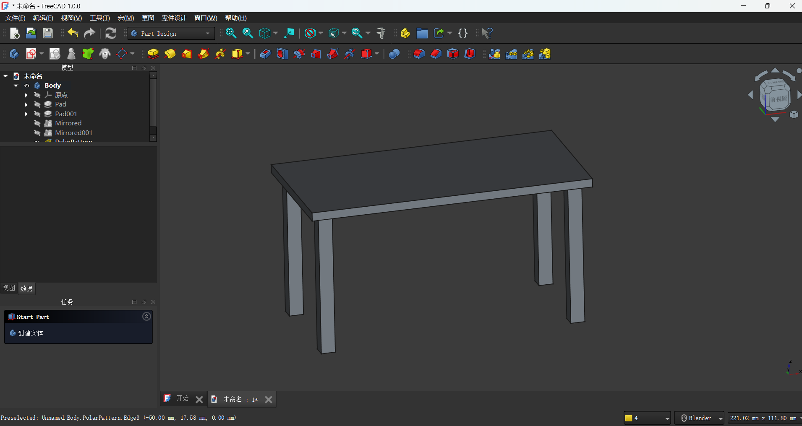
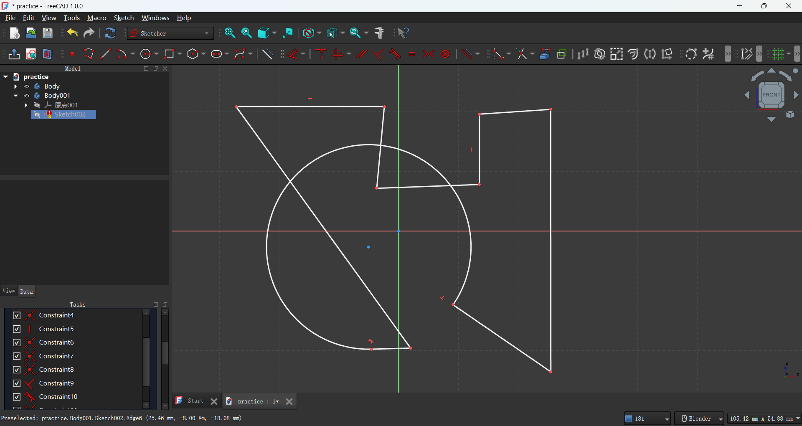
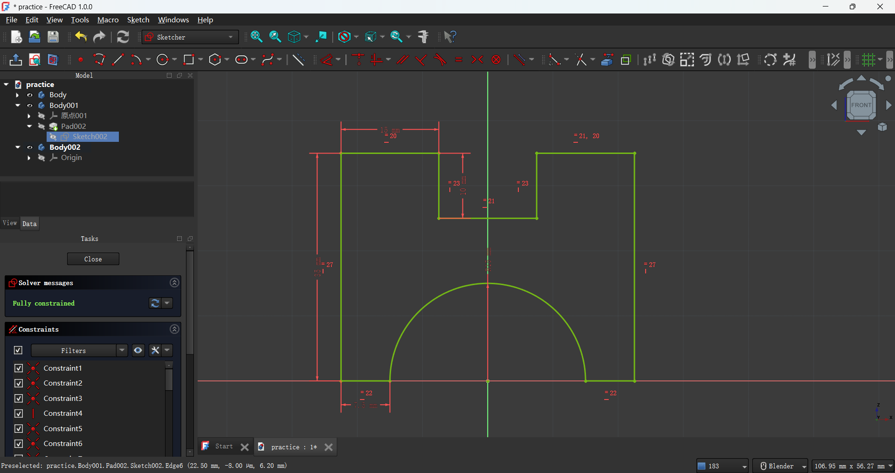
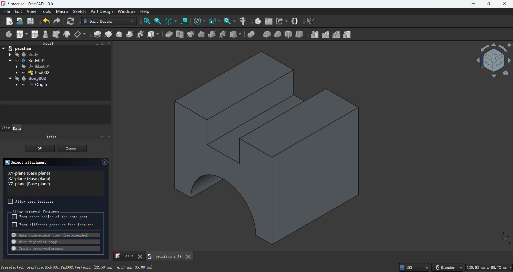
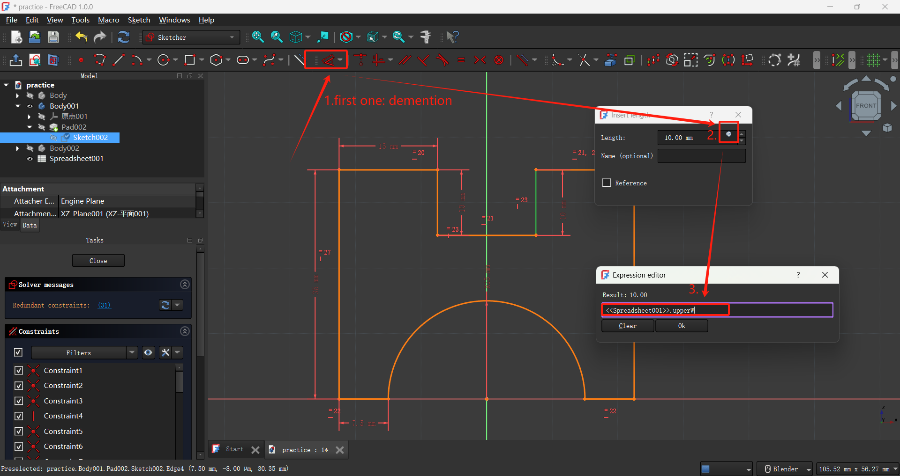
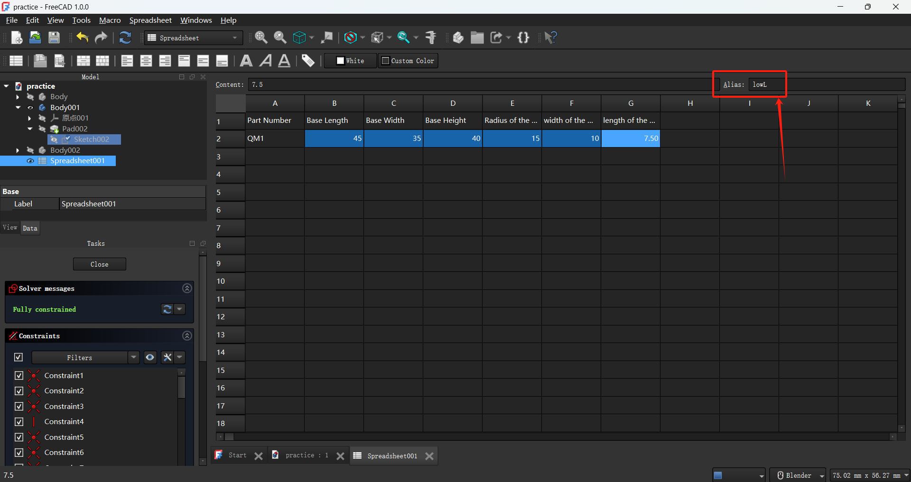

VR machine glove
I use FreeCAD to model my VR machine glove parts so that I can 3D print it later and embed sensors in it to do force feedback test.
As a 3D artist who used to use Blender frequnently, I think it's quit defferent compared to the precise modeling with freeCAD, I have to firstly draw a sketch with detailed data to plan the length of every line properly, and it's very unconvernient to model in freeCAD becaurse most operations can only be performed on the sketch using button and hotkeys, unlike Blender, directly edit on the 3D model (such as scaling, rotating the model, or editing points, edges and faces) is not possible.
Practice
-
I use horizontal distance constraint, vertical distance constraint and distance constraint to constrain the width(50mm) and length(100mm) of the desktop, so its precise length can't be easily changed. Because I also need to model 4 table legs, the model centering is the best, so I select two table diagonal points and the center point, and useconstrain symmetric to align them symmetrically. After constrain this model's length and axis position the solver messages will show "fully constrained".
I also use create external geometry to add the table edge with the desktop leg sketch, so that I can constrain the distance between the table leg and desktop edge.
At last, I use pad and edit the pad length to 3mm to make it 3D.
 -
I use create polyline to model some more complex stuff.
At first, I delete all the constraints so that I can edit it freely.
Then I applied constraints such as tangent constraint, paralle constraint, equal constraint, perpendicular constraint, distance constraint and coincident constraint to it uniformly, after the solver messages show "fully constrained", the sketch become totally precise and ready to pad to 3D.
 Create spreadsheet to record the length details. And connect the spreadsheet to the sketch length.
 
I follow a tutorial to model basic some stuff in freeCAD so that I can familiar with the interface, basic component, and convertion from sketch to 3D (compared with directly edit the 3d model).
Here is the project file I descript.